Following this learning path I was able to complete the guided project, and then later achieve the Deploy and configure Azure Monitor applied skill certification
Resources used:
Deploy and configure Azure Monitor learning path
Within the lab I had a few tasks I had to complete, the first one involved creating and configuring a log analytics workspace:
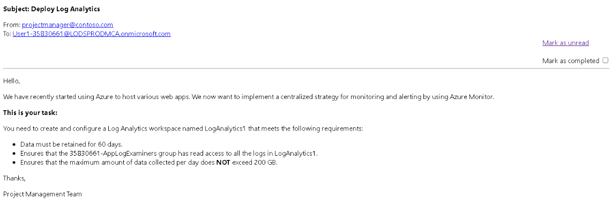
Set a 60 day retention period for the workspace
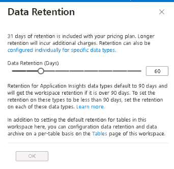
Set a daily cap of 200GB for data that is being injested into the workspace
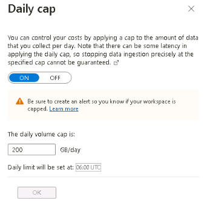
Assign the specified group with 'Log Analytics Reader' permissions
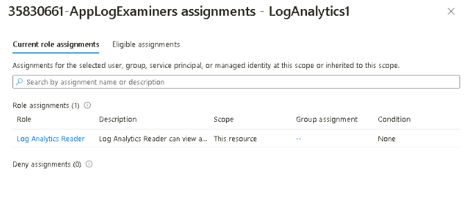
>In the second portion I had to configure monitoring for an exisiting web app & SQL database:
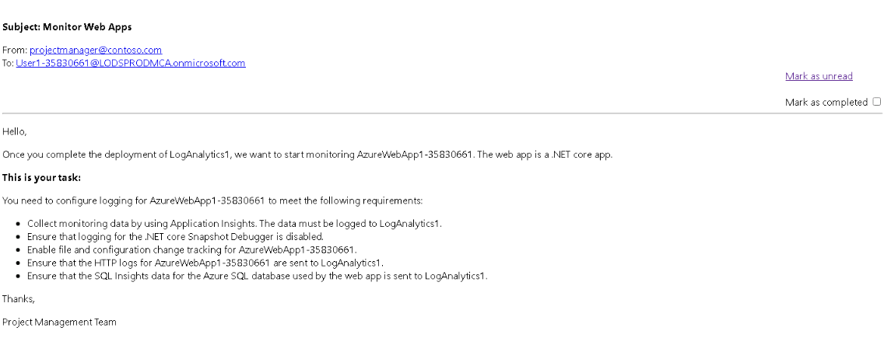
Enable monitoring for the web app
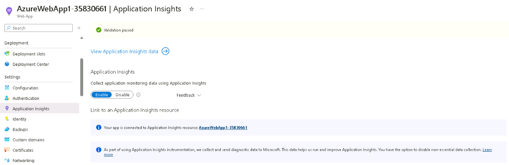
Disable snapshot debugger for the web app
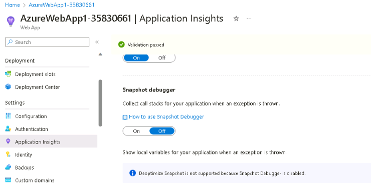
Enable file and configuration tracking for the web app
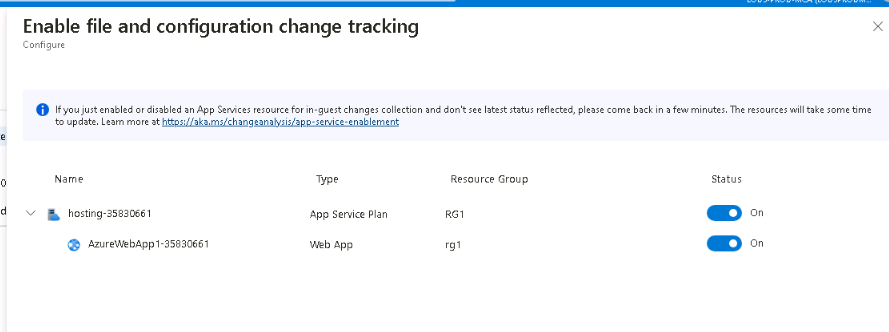
Send web app HTTP logs to the log analytics workspace
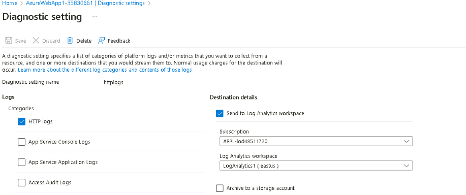
Send SQL database SQL insights to the log analytics workspace
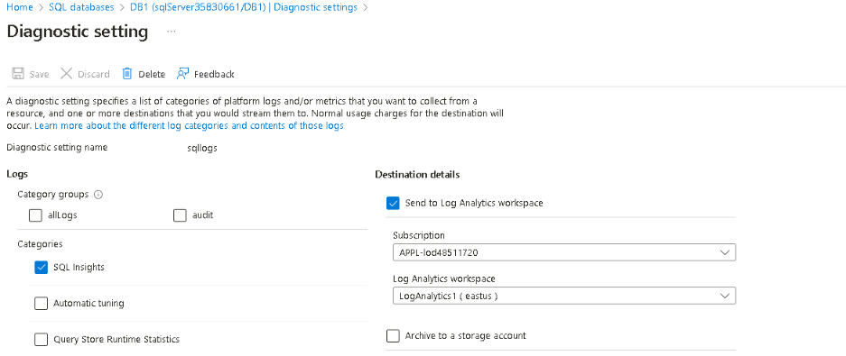
For the 3rd portion I had to configure insights and logging within 2 seperate VMs:
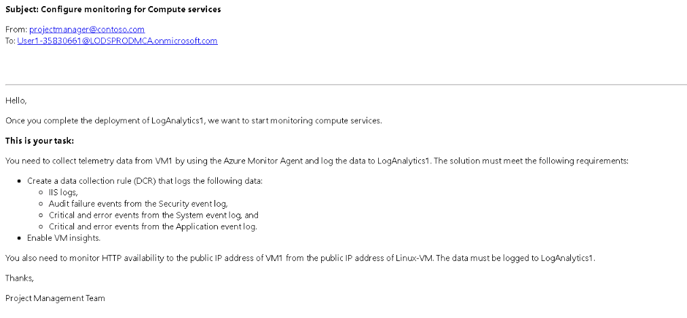
I had to first create a data collection endpoint so that the Azure monitor agent on the Windows VM could lo to the analytics workspace
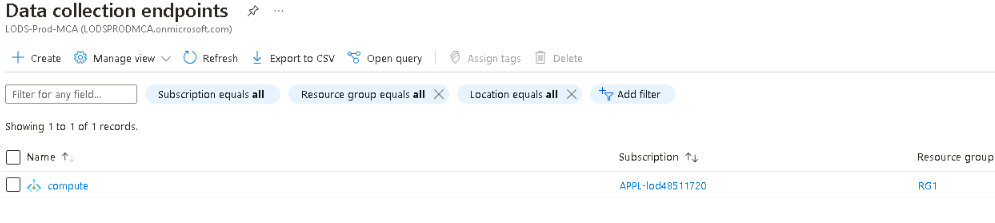
Installed the "Azure Monitor Windows Agent" on VM1, enabled "Insights" and also verified that it was collecting performance data for the VM
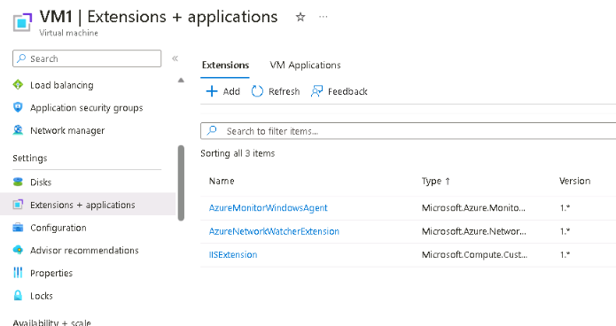
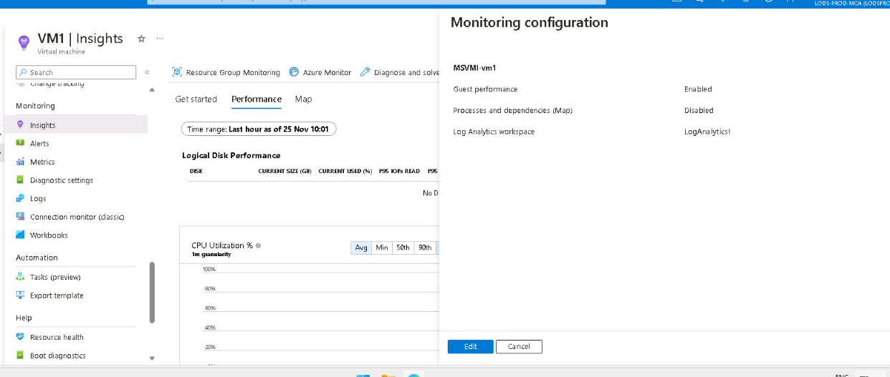
Created a "Data Collection Rule" that would collect IIS logs and other specified requirements
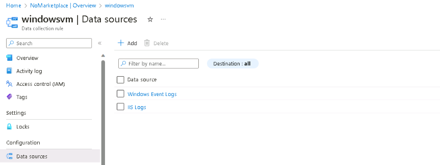
I then had to configure HTTP monitoring for VM1 using Linux-VM - first I installed the "Azuer Network Watcher Extension" for Linux-VM & VM1
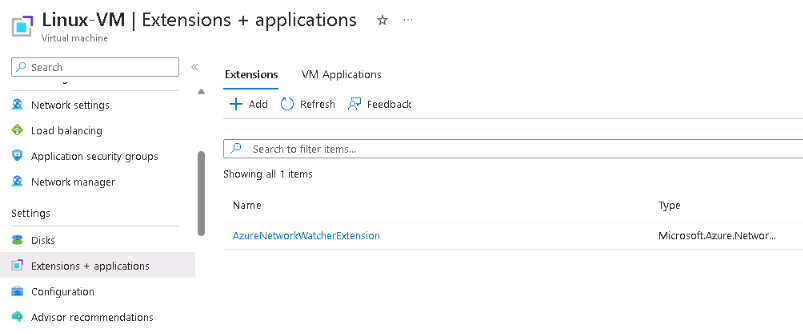
I then created a new "Outbound Port Rule" for the Linux-VM to allow it ping the VM over port 80
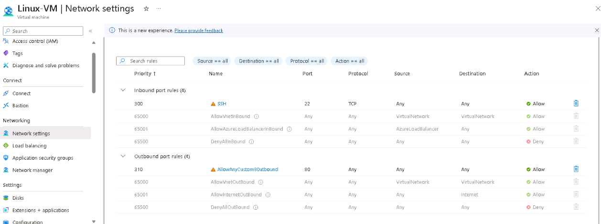
I also had to configure peering between VNET1 & VNET2 as both VMs were on seperate VNets]
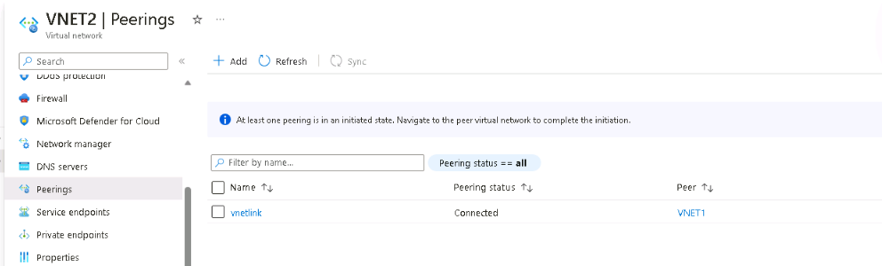
Within "Network Watcher" I then created a new connection monitor alert that would monitor VM1 using Linux-VM over port 80 and send data to the log analytics workspace - I also verified this was working
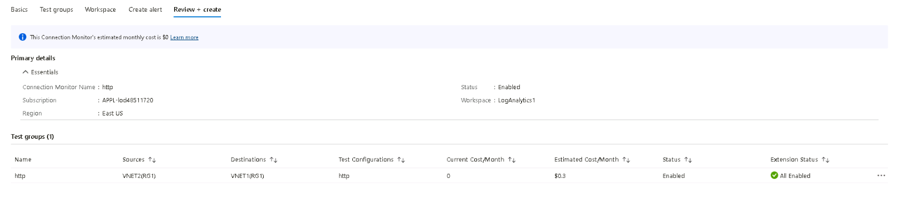
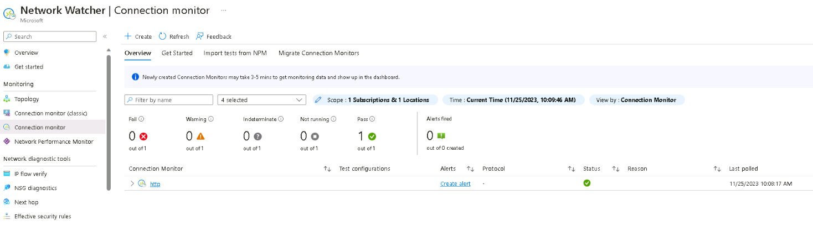
Finally within the last portion I had to create and configure and action group + alert:
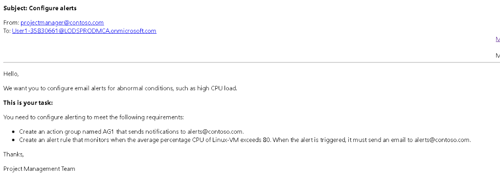
I had to create an action group that would send alerts@contoso.com an email upon triggering
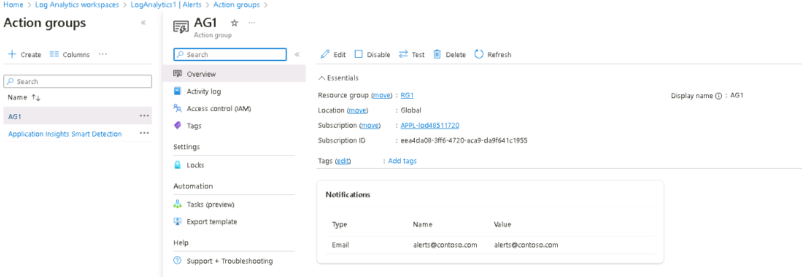
And an action rule that would trigger at over 80% CPU usage on the Linux-VM and trigger the previous action group
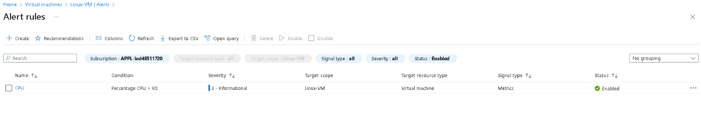